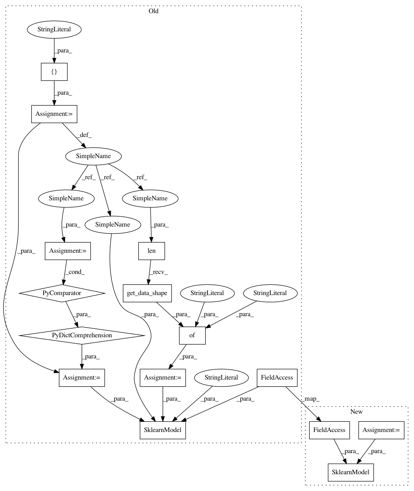

ce4a5ca7cab1ea4ae421fbcd3b28205b1e18158d,deepchem/models/tests/test_overfit.py,TestOverfitAPI,test_sklearn_classification_overfit,#TestOverfitAPI#,76
Before Change
def test_sklearn_classification_overfit(self):
Test that sklearn models can overfit simple classification datasets.
tasks = ["task0"]
task_types = {task: "classification" for task in tasks}
n_samples = 10
n_features = 3
n_tasks = len(tasks)
// Generate dummy dataset
np.random.seed(123)
ids = np.arange(n_samples)
X = np.random.rand(n_samples, n_features)
y = np.random.randint(2, size=(n_samples, n_tasks))
w = np.ones((n_samples, n_tasks))
dataset = Dataset.from_numpy(self.train_dir, X, y, w, ids, tasks)
model_params = {
"batch_size": None,
"data_shape": dataset.get_data_shape()
}
verbosity = "high"
classification_metric = Metric(metrics.roc_auc_score, verbosity=verbosity)
model = SklearnModel(tasks, task_types, model_params, self.model_dir,
mode="classification",
model_instance=RandomForestClassifier())
// Fit trained model
model.fit(dataset)
model.save()
After Change
verbosity = "high"
classification_metric = Metric(metrics.roc_auc_score, verbosity=verbosity)
sklearn_model = RandomForestClassifier()
model = SklearnModel(sklearn_model, self.model_dir)
// Fit trained model
model.fit(dataset)
model.save()
In pattern: SUPERPATTERN
Frequency: 3
Non-data size: 15
Instances
Project Name: deepchem/deepchem
Commit Name: ce4a5ca7cab1ea4ae421fbcd3b28205b1e18158d
Time: 2016-09-19
Author: bharath.ramsundar@gmail.com
File Name: deepchem/models/tests/test_overfit.py
Class Name: TestOverfitAPI
Method Name: test_sklearn_classification_overfit
Project Name: deepchem/deepchem
Commit Name: ce4a5ca7cab1ea4ae421fbcd3b28205b1e18158d
Time: 2016-09-19
Author: bharath.ramsundar@gmail.com
File Name: deepchem/models/tests/test_overfit.py
Class Name: TestOverfitAPI
Method Name: test_sklearn_classification_overfit
Project Name: deepchem/deepchem
Commit Name: ce4a5ca7cab1ea4ae421fbcd3b28205b1e18158d
Time: 2016-09-19
Author: bharath.ramsundar@gmail.com
File Name: deepchem/models/tests/test_overfit.py
Class Name: TestOverfitAPI
Method Name: test_sklearn_regression_overfit
Project Name: deepchem/deepchem
Commit Name: ce4a5ca7cab1ea4ae421fbcd3b28205b1e18158d
Time: 2016-09-19
Author: bharath.ramsundar@gmail.com
File Name: deepchem/models/tests/test_overfit.py
Class Name: TestOverfitAPI
Method Name: test_sklearn_skewed_classification_overfit